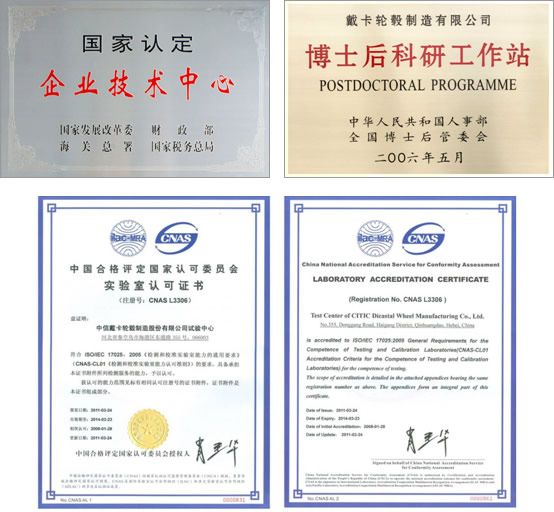

Your Position Now：Technical Capability --> Technical Development
Your Position Now：Technical Capability --> Technical DevelopmentTechnological Development
As the world's leading auto parts solutions provider, CITIC Dicastal has R&D branches overseas (North America, Europe and Japan) and domestically (Changchun, Shanghai, etc.) with centralized customers, providing on-site design services and engineering supports, achieving a global reach of R&D institutions. The PLM system is used to realize the whole life cycle management of products, which serves as a powerful support for trans-regional and cross-time zones collaborative design.
By supporting customized products to OEMs in Europe, North America, Japan and many independent brands, Dicastal has a deep understanding of the design requirements, technical standards and R&D processes of different customers worldwide, being able to quickly provide customers with “integrated solutions”, offer various creative choices starting from the very beginning: vehicle conceptual stage. Equipped with diversified mainstream technologies of forming aluminum parts (low pressure casting, cast flow forming (CFF), forging, counter pressure casting (CPC), high pressure casting (HPC), high vacuum casting, etc.), Dicastal manufactures products with more than 100 kinds of different surface conditions to meet the specialized requirements of customers around the world.
Adhering to the "customer-centric” development idea and based on strong R&D capabilities, Dicastal has become the supplier of dozens of well-known automobile enterprises, and has been working with Williams F1 team (the United Kingdom) in R&D to carry out high-end lightweight racing wheels.
Dicastal has established a mechanism to stimulate technological innovations by working in close cooperation with the universities and research institutions at home and abroad (North America, Europe, Japan) for technological progress. In recent years, we have developed the casting water cooling technology, two-tone paint process, transparent color paint technology, media polish surface treatment and many other new technologies and products, led or participated in the development of many national or industry standards, boasting more than 2,000 patents.
Testing Capacity
CITIC Dicastal has the internationally advanced test laboratory with complete test items and technologies for auto wheel and chassis parts testing. Test results are well accepted by major automotive OEMs worldwide. In December 2007, CITIC Dicastal Test Center passed ISO / IEC 17025 certification.
CITIC Dicastal Test Center has more than 70 sets of various equipment, which can be utilized for more than 100 test items including dimensional inspection, metallurgical material performance test, reliability and safety test, plating and coating performance test, as well as other tests. CITIC Dicastal Test Center is the first lab launched radial impact test, biaxial fatigue testing and filiform test on wheel program in China.
CITIC Dicastal Test Center has internationally advanced hydraulic testing system, which can be utilized for single channel or multi-channel durability and strength test on structural chassis parts under normal or extreme conditions. CITIC Dicastal Test Center is also capable for design of test plan, criteria and fixtures for steering knuckles.
In recent 2 years, CITIC Dicastal Test Center has completed following test items: Rim strength verification; Balance weight adhesion test; Wheel inertia evaluation; Wheel stress-strain test; Wheel rigidity test; Wheel frequency test; Wheel lug seat strength test. Following researches are under development: Study of fatigue characteristic on material; S-N curve slope research of bending fatigue test for aluminum wheels; Study of low pressure casting wheel casting defects and microstructure to the wheel performance; Application study of radial impact test;
CITIC Dicastal Test Center participates in making or revising a number of national standards and industry-standards.
CITIC Dicastal Test Center communicates and cooperates with leading University domestic and overseas as well as National Nonferrous Metal Research Institute on test study and analysis. Test center also cooperated and mutual recognized with the world advanced testing organizations such as ITS, SAE, TUV and BMW.
